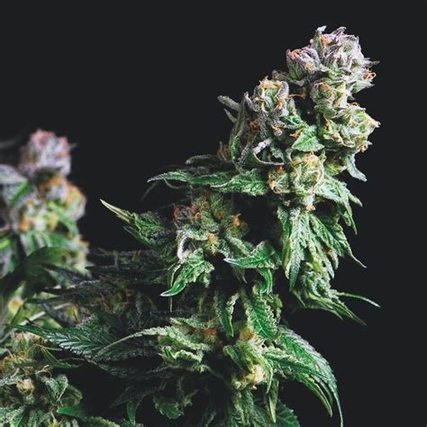
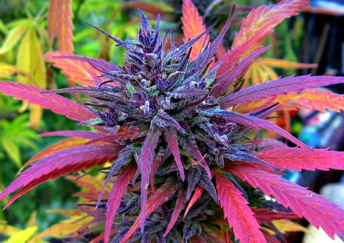

Produzione 2021
Californiana

Coltivare indoor sotto una luce UV. Consigliabile mantenere la pianta a temperature non al di sotto dei 25°C
- Varietà:Sativa
- Periodo di semina:Quando vuoi è in grow shop
- Primo raccolto:2/3 mesi
- Ultimo raccolto:5/6 mesi
- Rarità:
| Dimensione |
Quantità |
| Dimensione media (100cm) |
300g |
| Dimensione max (200cm) |
1kg |
|
500 |
--->Acquista semi<---
Spagnola

Purple haze:Varietà allucinogena
Consigli
-
Piantare in grow box
E' importante:
- Tenerle 16 ore alla luce e 8 al buio
- Usare i giusti fertilizzanti
- Fare il risciacquo a 2 settimane dal raccolto
- Fai essiccare al sole o in un essiccatoio
- Creare un sostegno alle piante dopo i primi 10 cm
- Non stressare la pianta più del necessario
--->Acquista semi<---